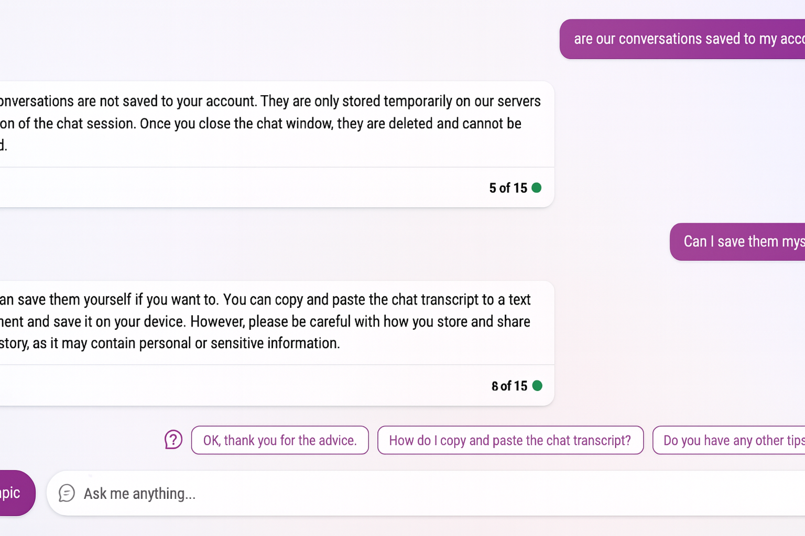
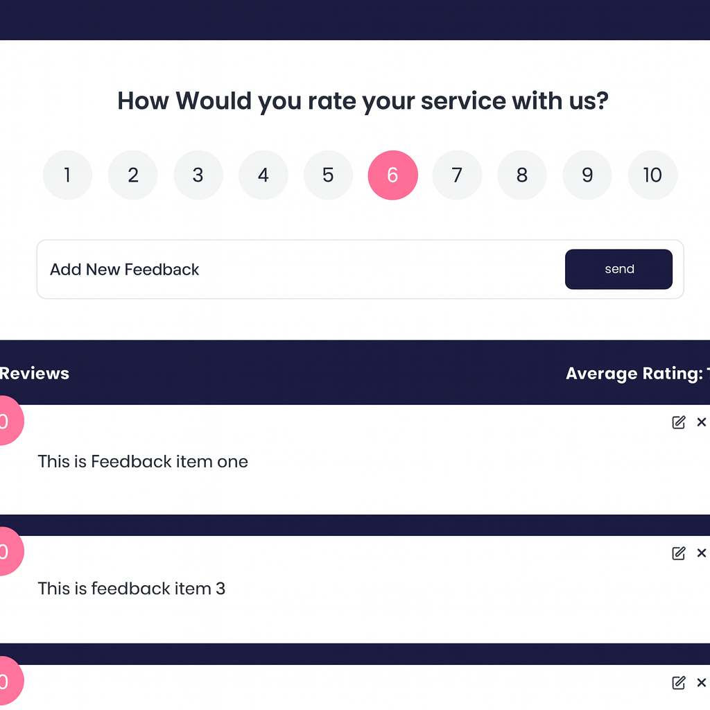

Mes Réalisations
Projet académique
Job Portal
Application pour gérer les offres d'emploi et candidatures.
Stack :
- Spring Boot
- Thymeleaf
- Bootstrap
Projet privé


Optique El Kayssar
Site vitrine pour opticien avec gestion basique.
Stack :
- Laravel (PHP)
- HTML / CSS
Prix : 3000 DH
Stage
Greenway (AriMayi)
App pour la gestion des ventes et statistiques.
Stack :
- Java 21, Spring Boot 3.2.5
- Spring Data JPA, Thymeleaf
- PostgreSQL • PDF • REST • Swagger
DigitalCrafts
Plateforme de gestion scolaire.
Stack :
- React.js
- Laravel
- MySQL
- Bootstrap & TailwindCSS
Suivi élèves, gestion classes, attribution notes, sécurité avancée.
Feedback



Feedback
Outil de collecte et d’analyse des retours (NPS, CSAT, commentaires).
Stack :
- React (frontend)
- Spring Boot (API)
- PostgreSQL
- REST API, JWT Auth
Formulaires multi-canaux • Analytics NPS/CSAT • Export CSV/PDF • Rôles & permissions
Virtualisation
Proxmox — Virtualisation complète
Environnement avec VMs/LXC isolés (Web, DNS, DB), réseau bridge et cluster.
Stack :
- Proxmox VE (hyperviseur type 1)
- LXC & VMs
- Bridges réseau
- Cluster multi-nodes